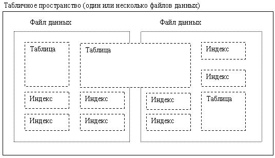
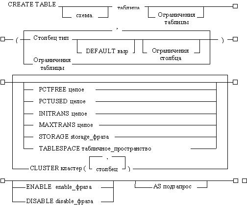

Создание таблиц с распределением памяти
Объекты схемы. Таблицы
Объекты схемы - это логические структуры памяти данных.
Каждому объекту схемы не соответствует физический файл на диске, в котором содержится информация этого объекта. Однако объект схемы логически хранится в табличном пространстве базы данных. Данные каждого объекта физически размещаются в одном или нескольких файлах данных табличного пространства. Для некоторых объектов, таких как таблицы, индексы и кластеры, вы можете указать количество дисковой памяти, которое должно быть распределено объекту в файлах данных табличного пространства.
На рисунке 9 показано отношение между объектами, табличными пространствами и файлами данных.

Рисунок 9 - Объекты схемы, табличные пространства и файлы данных
Не существует отношения между схемами и табличными пространствами; табличные пространства могут содержать объекты из разных схем, а объекты одной схемы могут содержаться в разных табличных пространствах.
Таблицы
Таблица - это основная единица памяти данных в базе данных ORACLE.
Данные таблицы хранятся в строках и столбцах. Каждая таблица определяется именем и набором столбцов. Каждому столбцу дается имя столбца, тип данных (такой как VARCHAR2, DATE или NUMBER) и ширина (которая может быть предопределена типом данных, как в случае DATE) или точность и масштаб (только для столбцов типа NUMBER). Строка - это коллекция информации столбцов, соответствующая одной записи.
Можно специфицировать правила для каждого столбца таблицы. Эти правила называются ограничениями целостности. Примером может служить ограничение целостности NOT NULL, которое диктует, что столбец не может содержать пустых значений.
После создания таблицы, в нее можно вставлять строки данных, используя предложения SQL. Затем информацию таблицы можно опрашивать, удалять или обновлять с помощью SQL.
Как хранятся данные таблицы
При создании таблицы в табличном пространстве автоматически создается сегмент данных, в котором будут храниться будущие данные этой таблицы. Вы можете контролировать распределение и использование пространства для сегмента данных таблицы различными способами:
- Можно управлять размерами экстентов для сегмента данных, установив параметры пространства для этого сегмента.
- Можно контролировать использование свободной памяти в блоках данных, составляющих экстенты сегмента данных, установив параметры PCTFREE и PCTUSED для этого сегмента.
Табличное пространство, в котором содержится таблица - это либо умалчиваемое табличное пространство пользователя, либо табличное пространство, явно указанное в предложении CREATE TABLE.
Синтаксис создания таблицы
Синтаксис создания таблицы показан на рисунке 10.

Рисунок 10 - Синтаксис создания таблицы
Некоторые ключевые слова и параметры приведены в таблице 2, об остальных подробно рассказано ниже
Таблица 2 - Ключевые слова команды CREATE TABLE
Ключевые слова | Описание |
1 | 2 |
Схема | Схема, в которой создается таблица. Если СХЕМА опущена, то ORACLE создает таблицу в вашей схеме |
Таблица | Имя создаваемой таблицы. |
Столбец | Специфицирует имя столбца таблицы. Количество столбцов в таблице может варьироваться от 1 до 254 |
Тип | Тип данных столбца. |
DEFAULT | Специфицирует умалчиваемое значение, которое должно назначаться столбцу, если в предложении INSERT, вставляющем данные в таблицу, будет отсутствовать значение для этого столбца. Тип данных выражения "выр" должен совпадать с типом данных столбца Выражение DEFAULT не может содержать ссылок на другие столбцы, псевдостолбцов CURRVAL, NEXTVAL, LEVEL и ROWNUM, а также не полностью специфицированных констант дат. |
огр_столбца | Определяет ограничение целостности как часть определения столбца |
огр_таблицы | Определяет ограничение целостности как часть определения таблицы. |
Табличное пространство | Специфицирует табличное пространство, в котором ORACLE создает таблицу. Если эта опция опущена, то ORACLE создает таблицу в умалчиваемом табличном пространстве владельца схемы, в которой создается таблица. |
STORAGE | Специфицирует характеристики памяти для таблицы. Эта фраза имеет некоторые варианты производительности для больших таблиц. Следует распределять память так, чтобы минимизировать динамическое распределение дополнительной памяти. |
CLUSTER | Указывает, что таблица должна быть частью кластера. Столбцы, перечисленные в этой фразе, называют те столбцы таблицы, которые соответствуют столбцам ключа кластера. Обычно эти столбцы составляют первичный ключ таблицы или часть ее первичного ключа. Столбцы таблицы и кластера сопоставляются по позициям, а не по именам. Поскольку кластеризованная таблица использует распределение памяти кластера, не рекомендуется использование с опцией CLUSTER параметров PCTFREE, PCTUSED, INITRANS и MAXTRANS, а также опции TABLESPACE. |
ENABLE | Включает ограничение целостности |
DISABLE | Выключает ограничение целостности. |
AS подзапрос | Вставляет в таблицу при ее создании строки, возвращаемые подзапросом. При включении этой фразы, определения столбцов могут специфицировать только имена столбцов, их умалчиваемые значения и ограничения целостности, но не типы данных. ORACLE выводит типы данных и длины столбцов из подзапроса. ORACLE также автоматически определяет ограничения NOT NULL по столбцам новой таблицы, если эти ограничения существовали по соответствующим столбцам опрашиваемой таблицы, и если подзапрос не модифицирует значение столбца посредством функции SQL или оператора. Предложение CREATE TABLE не может содержать одновременно фразу AS и определение ограничения ссылочной целостности. Число столбцов в таблице должно совпадать с количеством выражений в подзапросе. Если все выражения в подзапросе представляют собой столбцы, то можно полностью опустить перечень столбцов в определении таблицы. В этом случае имена столбцов таблицы будут такими же, как имена столбцов в подзапросе. |
Рассмотрим возможности управления распределением памяти при создании таблиц.
Следующие секции объясняют, как использовать параметры PCTFREE и PCTUSED для выполнения следующих задач:
- повышения производительности записи и извлечения данных или индексов;
- уменьшения объема неиспользуемой памяти в блоках данных;
- уменьшения количества цепочек строк между блоками данных.
Специфицирование PCTFREE
Умолчание для PCTFREE равно 10 процентов; вы можете задавать любое целое значение от 0 до 99 включительно, пока сумма PCTFREE и PCTUSED не превышает 100. (Если вы установите PCTFREE как 99, то ORACLE будет помещать в каждый блок по меньшей мере одну строку, независимо от размера этой строки. Если строки очень малы, а блоки очень велики, может уместиться даже несколько строк.)
Низкое значение PCTFREE имеет следующие эффекты:
- резервирует меньше места для обновлений существующих строк таблицы;
- позволяет более полно заполнять блок вставками;
- может экономить память, так как все данные таблицы или индекса хранятся в меньшем количестве блоков (больше строк на один блок);
- увеличивает стоимость обработки, так как ORACLE вынужден часто реорганизовывать блоки по мере заполнения их свободной памяти новыми или обновленными данными;
- потенциально увеличивает стоимость обработки и требуемую память, если обновления строк или записей индекса приводят к росту строк и расщеплению их между блоками (ибо предложения UPDATE, DELETE и SELECT должны считывать больше блоков для данной строки, следуя по цепочке, связывающей куски строки)
Высокое значение PCTFREE имеет следующие эффекты:
- резервирует больше места для обновлений существующих строк таблицы;
- может потребовать больше памяти для того же количества вставляемых данных (вставляет меньше строк на один блок);
- уменьшает стоимость обработки, так как блоки редко требуют реорганизации своей свободной памяти;
- может улучшить производительность обновлений, потому что ORACLE не должен столь часто, как прежде, строить цепочки для кусков строк.

PCTFREE для таблиц
Если данные в строках таблицы имеют тенденцию к увеличению размера, зарезервируйте часть места для таких обновлений. В противном случае обновления строк будут приводить к расщеплению строк между блоками и ухудшению производительности операций ввода-вывода, связанных с этими строками.
Специфицирование PCTUSED
Когда свободная память в блоке данных падает до PCTFREE, в этот блок не вставляются новые строки, пока процент занятой памяти не упадет ниже PCTUSED. ORACLE старается удержать блок данных заполненным по крайней мере на PCTUSED. Это - процент памяти в блоке, свободной для данных после вычета накладных расходов из общей памяти блока.
Умолчание для PCTUSED равно 40 процентов; вы можете задавать любое целое значение от 0 до 99 включительно, пока сумма PCTFREE и PCTUSED не превышает 100.
Низкое значение PCTUSED имеет следующие эффекты:
- в среднем, удерживает блоки менее заполненными, чем высокий процент PCTUSED;
- уменьшает стоимость обработки, требующейся при UPDATE и DELETE для перемещения блока в свободный список, когда его занятая память падает ниже PCTUSED;
- увеличивает неиспользуемую память в базе данных.
Высокое значение PCTUSED имеет следующие эффекты:
- в среднем, удерживает блоки более заполненными, чем низкий процент PCTUSED;
- улучшает эффективность использования памяти;
- увеличивает стоимость обработки, требующейся при UPDATE и DELETE.
Выбор связанных значений PCTUSED и PCTFREE
Если вы решили явно задать значения PCTUSED и PCTFREE, примите во внимание следующие соображения:
- Сумма PCTFREE и PCTUSED не должна превышать 100.
- Если эта сумма меньше 100, то идеальным компромиссом между утилизацией памяти и производительностью ввода-вывода является случай, когда сумма PCTFREE и PCTUSED отличается от 100 на величину, равную проценту памяти в свободном блоке, занимаемому средней строкой. Например, предположим, что размер блока данных равен 2048 байт; за минусом 100 байт накладных расходов это дает 1948 байт, доступных для данных. Если средняя строка требует 195 байт, или 10% от 1948, то наилучший компромисс даст сумма PCTFREE и PCTUSED, равная 90%.
-Если эта сумма равна 100, то ORACLE пытается удерживать в блоке не больше чем PCTFREE свободной памяти, и стоимость обработки будет максимальной.
- Фиксированные накладные расходы блока не включаются в вычисления PCTUSED и PCTFREE.
- Чем меньше разница между 100 и суммой PCTUSED и PCTFREE (скажем, при PCTUSED=75 и PCTFREE=20), тем выше утилизация памяти, за счет некоторого повышения стоимости обработки.
Примеры выбора значений PCTFREE и PCTUSED
Следующие примеры иллюстрируют подбор значений PCTFREE и PCTUSED при заданных сценариях.
Сценарий 1: Типичная работа включает предложения UPDATE, которые увеличивают размеры строк. Установка: PCTFREE = 20 PCTUSED = 40 |  |
|---|
Объяснение: PCTFREE установлен в 20, чтобы оставить достаточно места для строк, увеличивающихся в размере при обновлениях. PCTUSED установлен в 40, чтобы требовалось меньше обработки при высокой активности обновлений, т.е. для улучшения производительности.
Сценарий 2: Типичная работа включает предложения INSERT и DELETE, а предложения UPDATE в среднем не увеличивают размеры строк. Установка: PCTFREE = 5 PCTUSED = 60 | |
|---|
Объяснение: PCTFREE установлен в 5, так как большинство предложений UPDATE не увеличивают размеров строк. PCTUSED установлен в 60, так что память, освобождаемая предложениями DELETE, скоро начинает повторно использоваться, так что обработка минимизируется.
Сценарий 3: Таблица очень велика; поэтому основной заботой является память. Типичная работа включает только-читающие транзакции. Установка: PCTFREE = 5 PCTUSED = 90 | |
|---|
Объяснение: PCTFREE установлен в 5, так предложения UPDATE используются редко. PCTUSED установлен в 90, так что для хранения данных используется большая часть блока. Это значение PCTUSED уменьшает число блоков, требуемое для размещения всех данных таблицы, сокращает среднее число блоков, просматриваемых во время запросов, и тем самым увеличивает производительность запросов.
Установка параметров памяти
Можно устанавливать параметры памяти для следующих типов структур логической памяти:
- табличных пространств (действуют на каждый сегмент в табличном пространстве);
-таблиц, кластеров, снимков и журналов снимков (сегментов данных);
- индексов (сегментов индексов);
- сегментов отката.
Каждая база данных имеет умалчиваемые значения для параметров памяти. Вы можете специфицировать умолчания для табличного пространства, которые перекроют системные умолчания и станут умолчаниями для объектов, создаваемых в этом конкретном табличном пространстве; кроме того, вы можете явно специфицировать характеристики памяти для каждого индивидуального объекта. Параметры памяти, которые вы можете устанавливать, перечислены ниже, вместе с их системными умолчаниями.
Привилегии, требуемые для создания таблиц
Чтобы создать новую таблицу в собственной схеме, пользователь должен иметь системную привилегию CREATE TABLE. Чтобы создать таблицу в схеме другого пользователя, пользователь должен иметь системную привилегию CREATE ANY TABLE. Кроме того, владелец таблицы должен иметь квоту для табличного пространства, в котором содержится таблица, либо системную привилегию UNLIMITED TABLESPACE.
Изменение таблиц
Существуют следующие причины, которые могут потребовать изменения таблицы в базе данных ORACLE:
- чтобы добавить один или несколько новых столбцов;
- чтобы добавить одно или несколько ограничений целостности;
- чтобы модифицировать определение существующего столбца (тип данных, длину, умалчиваемое значение или ограничение целостности NOT NULL);
- чтобы модифицировать параметры использования памяти блока данных таблицы (PCTFREE, PCTUSED);
- чтобы модифицировать характеристики записей транзакций (INITRANS, MAXTRANS);
- чтобы модифицировать параметры памяти (NEXT, PCTINCREASE и т.п.);
- чтобы включить или выключить ограничения целостности или триггеры, ассоциированные с таблицей;
- чтобы удалить ограничения целостности, ассоциированные с таблицей.
При изменении определений столбцов в таблице, вы можете лишь увеличить длину существующего столбца; вы можете уменьшить ее лишь в том случае, если таблица пуста.
Более того, если вы увеличиваете длину столбца с типом данных CHAR, вы должны понимать, что эта операция может потребовать значительного времени и существенной дополнительной памяти, особенно если таблица содержит много строк. Причина в том, что значение CHAR в каждой строке должно быть дополнено пробелами до новой длины столбца.
Для изменения таблицы используется команда SQL ALTER TABLE. Например, следующее предложение изменяет таблицу EMP:
ALTER TABLE emp PCTFREE 30 PCTUSED 60;
Последствия изменения таблицы: - Если к таблице добавляется новый столбец, то изначально он пуст. Вы можете добавить новый столбец с ограничением NOT NULL лишь в том случае, если в таблице нет ни одной строки. - Если обзор или программная единица PL/SQL зависят от базовой таблицы, то изменение этой базовой таблицы может повлиять на зависимый объект, и всегда делает этот зависимый объект недействительным. |  |
|---|
Привилегии, требуемые для изменения таблиц
Чтобы изменить таблицу, либо она должна содержаться в собственной схеме пользователя, либо пользователь должен иметь объектную привилегию ALTER для этой таблицы, или системную привилегию ALTER ANY TABLE.
Удаление таблиц
Для удаления ненужной таблицы, используется команду SQL DROP TABLE. Например, следующее предложение удаляет таблицу EMP:
DROP TABLE emp;
Если удаляемая таблица содержит первичный или уникальный ключ, на который ссылаются внешние ключи других таблиц, то вы можете одновременно с этой таблицей удалить ограничения FOREIGN KEY для порожденных таблиц, включив в команду DROP TABLE опцию CASCADE, например:
DROP TABLE emp CASCADE CONSTRAINTS;
Эффекты удаления таблицы: - Удаление таблицы приводит к удалению ее определения из словаря данных. Все строки таблицы необратимо теряются. - Все индексы и триггеры, ассоциированные с таблицей, также удаляются. - Все обзоры и программные единицы PL/SQL, зависимые от удаляемой таблицы, остаются, но становятся недействительными (непригодными для использования). - Все синонимы удаленной таблицы остаются, но возвращают ошибку при обращении к ним. - Все экстенты, распределенные удаляемой некластеризованной таблице, возвращаются в свободную память табличного пространства и могут использоваться любым другим объектом, требующим новых экстентов. | |
|---|
Привилегии, требуемые для удаления таблиц
Чтобы удалить таблицу, либо она должна содержаться в собственной схеме пользователя, либо пользователь должен иметь системную привилегию DROP ANY TABLE.
Формат и размер строки
Каждая строка таблицы базы данных хранится как один или несколько кусков строки. Если вся строка может быть вставлена в один блок данных, она первоначально вставляется как единственный кусок. Однако, если все данные в строке не могут быть вставлены в один блок данных, или если в результате обновления строки ее данные переполняют ее блок данных, то строка сохраняется как несколько кусков. Блок данных обычно содержит лишь один кусок для каждой строки данных; все данные строки, которые умещаются в блоке, хранятся в одном куске строки внутри блока. Когда требуется разбить строку на несколько кусков, образуется "цепочка" из кусков этой строки, размещенных в нескольких блоках данных. Куски строки логически сцепляются через идентификаторы строки (ROWID'ы).
Каждый кусок строки, в цепочке он или нет, содержит заголовок строки и данные для всех или некоторых столбцов строки. Индивидуальные значения столбцов также могут занимать несколько кусков строки и, следовательно, блоков данных.
Заголовок строки предшествует данным строки и содержит следующую информацию:
- информацию об этом куске строки;
- информацию о цепочке, если этот кусок в цепочке;
- информацию о столбцах в этом куске строки.
Строка, полностью умещающаяся в одном блоке, имеет не менее чем трехбайтовый заголовок строки. Вслед за информацией заголовка строки каждая строка содержит информацию о столбцах и данные столбцов. На длину столбца требуется один байт, если эта длина не превышает 250 байт, или три байта для столбцов, содержащих более 250 байт; это поле длины столбца непосредственно предшествует данным столбца. Память, занимаемая данными столбца, зависит от типа данных столбца. Если столбец имеет переменную длину, то место, занимаемое значением столбца, может уменьшаться и увеличиваться при обновлениях.
Для экономии места, строка, содержащая только пустые значения, хранится только как нулевая длина столбца, без данных.
На каждую строку используется два байта в оглавлении строк в заголовке блока данных. |  |
|---|
Порядок столбцов
Порядок столбцов один и тот же для всех строк в данной таблице. Столбцы обычно хранятся в том порядке, в котором они были перечислены в предложении CREATE TABLE, но это не гарантируется. Например, если вы создаете таблицу со столбцом типа LONG, то ORACLE всегда размещает этот столбец последним. Кроме того, если таблица изменяется так, что к ней добавляется новый столбец, то этот новый столбец становится последним хранящимся столбцом.
В общем случае, вы должны стараться последними размещать те столбцы, которые часто содержат пустые значения, с тем, чтобы строки занимали меньше места. Заметьте, однако, что, если ваша таблица содержит столбец типа LONG, то преимущества от перемещения таких пустых столбцов теряются.
ROWID'ы кусков строк
Каждый кусок строки идентифицируется ее адресом, который называется ROWID. Однажды назначенный ROWID сохраняется за всеми кусками данной строки до тех пор, пока строка не будет удалена, или экспортирована и импортирована с помощью утилит EXPORT и IMPORT.
Поскольку ROWID является постоянным на все время жизни (куска) строки, к нему можно обращаться в предложениях SQL, и он может оказаться полезным в предложениях SELECT, UPDATE и DELETE.
Пустые значения
NULL, или пустое значение, обозначает отсутствие значения в столбце строки. Пустые значения указывают на то, что данные отсутствуют, неизвестны или неприменимы. Пустое значение не может подразумевать никакого значения, в том числе нулевого. Столбец может содержать пустые значения, если для него не было определено ограничение целостности NOT NULL; в этом случае в таблицу нельзя вставить строку, которая содержала бы пустое значение для данного столбца.
Пустые значения хранятся в базе данных, если они попадают между столбцами, имеющими значения. В таких случаях пустое значение занимает один байт. Хвостовые пустые значения не хранятся и не занимают памяти. В таблицах, содержащих много столбцов, те столбцы, которые чаще всего будут пустыми, следует определять в конце, чтобы сэкономить дисковую память.
Пустые значения распознаются в SQL через предикат IS NULL. Функция SQL с именем NVL может использоваться, чтобы преобразовывать пустые значения в непустые. Пустые значения не индексируются, исключая случай, когда столбец ключа кластера имеет пустое значение.
Умалчиваемые значения столбцов
Столбцу таблицы может быть назначено умалчиваемое значение, так что при вставке в таблицу новой строки, если значение этого столбца опущено, ему будет автоматически присваиваться значение по умолчанию. Умалчиваемые значения столбцов работают так, как если бы они были явно специфицированы в предложении INSERT.
Допустимыми умалчивамыми значениями могут быть литералы или выражения, не ссылающиеся на столбец. Умалчиваемые значения могут включать функции SYSDATE, USER, USERENV. Тип данных умалчиваемого литерала или выражения должен быть преобразуемым в тип данных столбца.
Если для столбца явно не определено умалчиваемое значение, то умолчанием для столбца неявно становится пустое значение (NULL).
Умалчиваемые значения столбцов и ограничения целостности
Проверка ограничений целостности происходит после вставки строки с умалчиваемыми значениями для столбцов.
Рекомендации по созданию таблиц: - Используйте описательные имена для таблиц, индексов и кластеров. - Согласовывайте сокращения, а также единственную и множественную формы имен таблиц и столбцов. - Документируйте назначение каждой таблицы и ее столбцов с помощью команды COMMENT. - Нормализуйте каждую таблицу. - Выберите правильный тип данных для каждого столбца. - Определяйте столбцы, которые допускают пустые значения, последними, чтобы экономить дисковую память. - Кластеризуйте таблицы, когда это целесообразно, чтобы экономить дисковую память и оптимизировать производительность ваших предложений SQL. Прежде чем создавать таблицу, вы должны также определить, будете ли вы использовать ограничения целостности. Ограничения целостности могут быть определены по столбцам вашей таблицы для того, чтобы автоматически задействовать организационные правила вашей базы данных. | |
|---|
Примеры создания таблиц приведены в практическом задании.